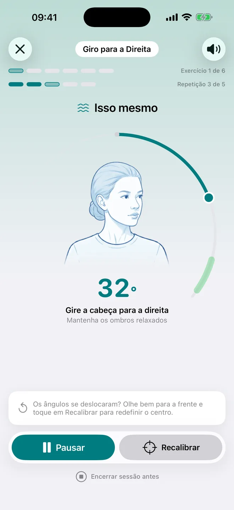
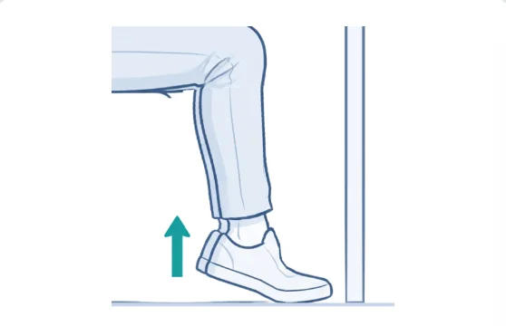
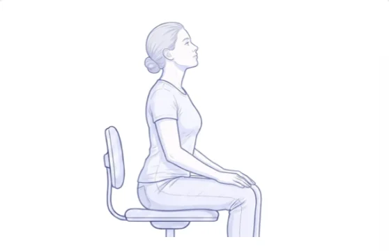
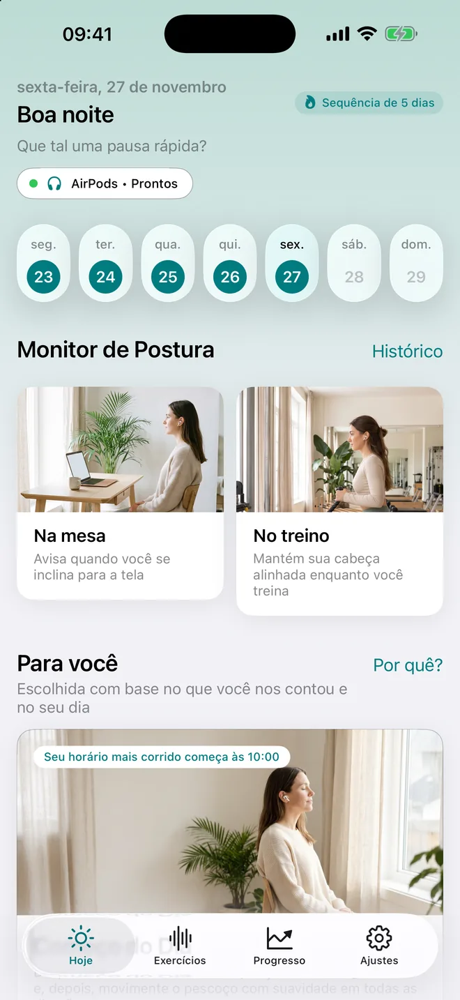
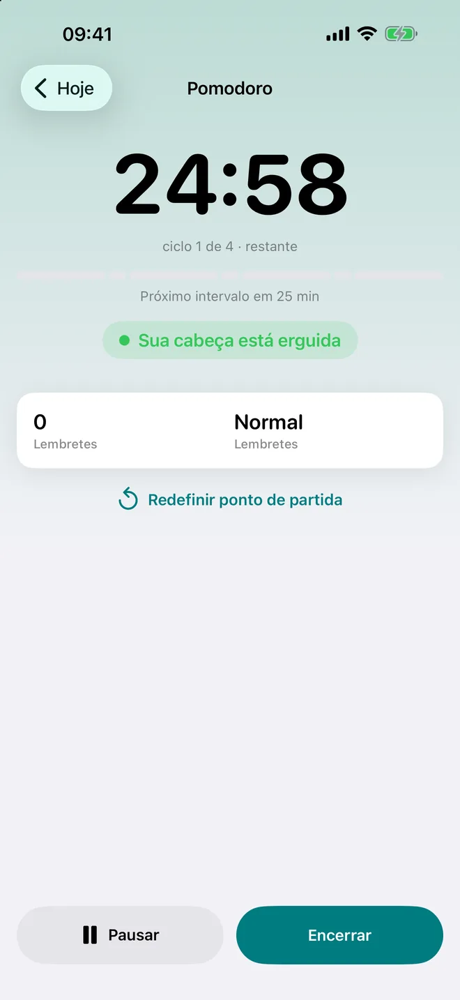

Pescoço
Giros, inclinações laterais, olhar para baixo e para cima, retração do queixo. Os AirPods medem o ângulo e contam as repetições; sem eles, o Nodly guia o ritmo com um temporizador.
Exercícios curtos para pescoço, respiração, olhos, mãos e pernas, além de ioga na cadeira. Com seus AirPods, o Nodly mede os movimentos do pescoço, acompanha sua postura e avisa quando sua cabeça fica baixa por muito tempo.
Baixar na App StorePara iPhone e iPad · Com AirPods compatíveis ou sem eles

Não é só o pescoço
Giros, inclinações laterais, olhar para baixo e para cima, retração do queixo. Os AirPods medem o ângulo e contam as repetições; sem eles, o Nodly guia o ritmo com um temporizador.

Expiração longa, respiração quadrada e respiração equilibrada, por 1, 2 ou 3 minutos, no ritmo de uma animação e de uma vibração leve.

Uma pausa de dois minutos longe da tela: olhe para longe, pisque devagar e descanse de olhos fechados.

Alongamentos e círculos com os punhos e exercícios de abrir e fechar as mãos, para dias de teclado e mouse.

Elevação de calcanhares, elevação da ponta dos pés, extensão de joelho e marcha sentada, sem sair da cadeira.

Gato-vaca, alongamento lateral e torção sentados, além de movimentos para soltar os ombros entre reuniões.
Só o rastreamento do pescoço usa AirPods. Todo o resto funciona sem eles.
Medido com seus AirPods
Os sensores de movimento dos fones acompanham o ângulo da sua cabeça. Quando você alcança a faixa-alvo, o Nodly avisa com um som e uma vibração e conta a repetição por você. As metas se ajustam à sua própria amplitude de movimento.
O Nodly usa os sensores de movimento dos seus fones. Sem câmera e sem outro aparelho.
Olhe bem para a frente e mantenha a cabeça parada por alguns segundos. O Nodly considera essa posição como 0°.
Quando você alcança a faixa-alvo, o Nodly avisa com um som e uma vibração e conta a repetição por você.
0°
Direita
Arraste para a direita até chegar à faixa verde e depois volte ao centro.
Repetições: 0


Monitor de Postura
Acompanha sua cabeça enquanto você trabalha, de 30 minutos a 2 horas, ou em ciclos Pomodoro de 25 minutos de trabalho e 5 de intervalo.
Se sua cabeça baixar em exercícios feitos em pé, o Nodly avisa em segundos. Para exercícios feitos deitado, basta pausá-lo.
Bloqueie o celular e continue trabalhando. O tempo restante aparece na Tela Bloqueada, e você pode pausar ou encerrar por ali.
Com a Siri, pela Central de Controle ou com uma automação de Foco no app Atalhos.
“Iniciar Monitor de Postura no Nodly”
Rotinas
Comece com uma rotina pronta, como Começo do Dia ou Pausa da Tela, ou escolha movimentos da biblioteca e coloque-os na ordem que quiser. Na tela Hoje, Para você sugere uma rotina que combina com o seu dia e o seu horário mais corrido.
Progresso
Sua sequência, sua semana e como seu tempo se divide entre pescoço, respiração, olhos, mãos e pernas, tudo num relance. E, conforme você se exercita, uma pequena mesa em 3D vai se arrumando.
Os detalhes
Seu histórico e suas rotinas são sincronizados entre seu iPhone e seu iPad pelo seu próprio iCloud.
Os exercícios para o pescoço podem seguir um temporizador. Os outros exercícios nunca precisam de AirPods.
Um lembrete diário, pausas na mesa durante seu horário mais corrido e um resumo semanal, todos opcionais.
Instruções faladas, sons e vibrações guiam você, para que seus olhos possam ficar longe da tela.
Texto Dinâmico, VoiceOver e Reduzir Movimento, no iPhone e no iPad.
Português, inglês, turco, alemão, espanhol, francês, italiano, holandês, russo, japonês, coreano e chinês (simplificado e tradicional).
Privacidade e confiança
Os dados de movimento são processados no seu celular, e o movimento bruto nunca é armazenado. Não é preciso criar conta.
Os movimentos devem ser lentos e confortáveis. Se algo não parecer bem, pare imediatamente. O Nodly nunca pressiona você.
O Nodly é um app de bem-estar; não diagnostica nem trata nenhuma condição. Se você tem algum problema no pescoço, consulte um profissional de saúde antes de começar.
Informações legais
Sem conta, e seus dados de movimento ficam no seu dispositivo. Só coletamos estatísticas de uso anônimas se você permitir. Sem anúncios, sem rastreamento, sem venda de dados.
Ler o texto completoO Nodly é oferecido como assinatura mensal ou anual, e usuários elegíveis têm 7 dias de teste grátis. Você pode cancelar quando quiser nos ajustes da sua conta da App Store.
Ler o texto completoMova-se devagar e só dentro de uma amplitude confortável. Pare imediatamente se sentir dor, tontura ou dormência.
Ler o texto completo